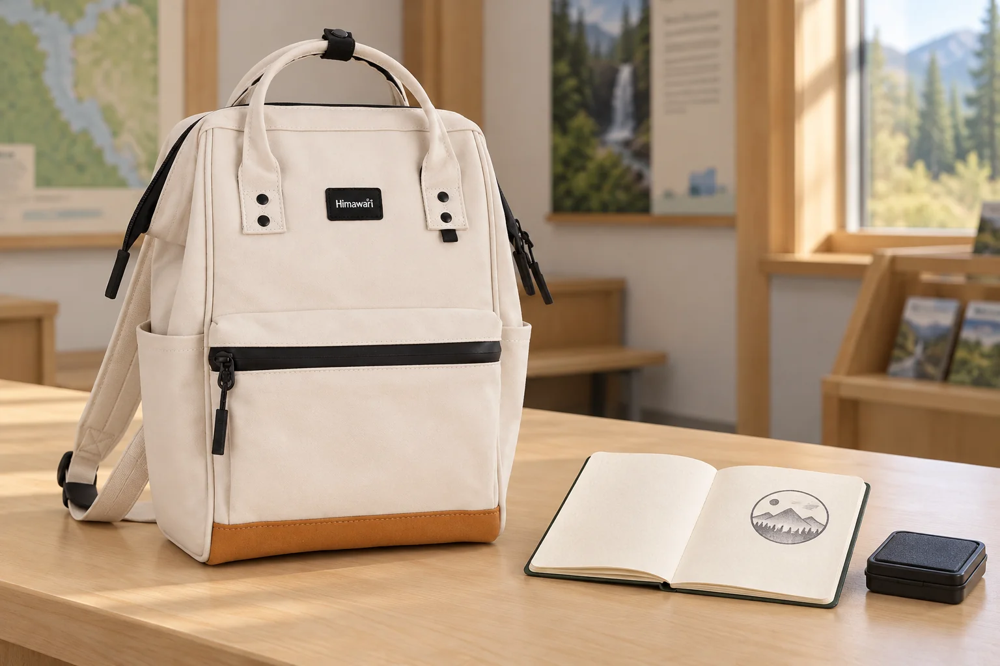
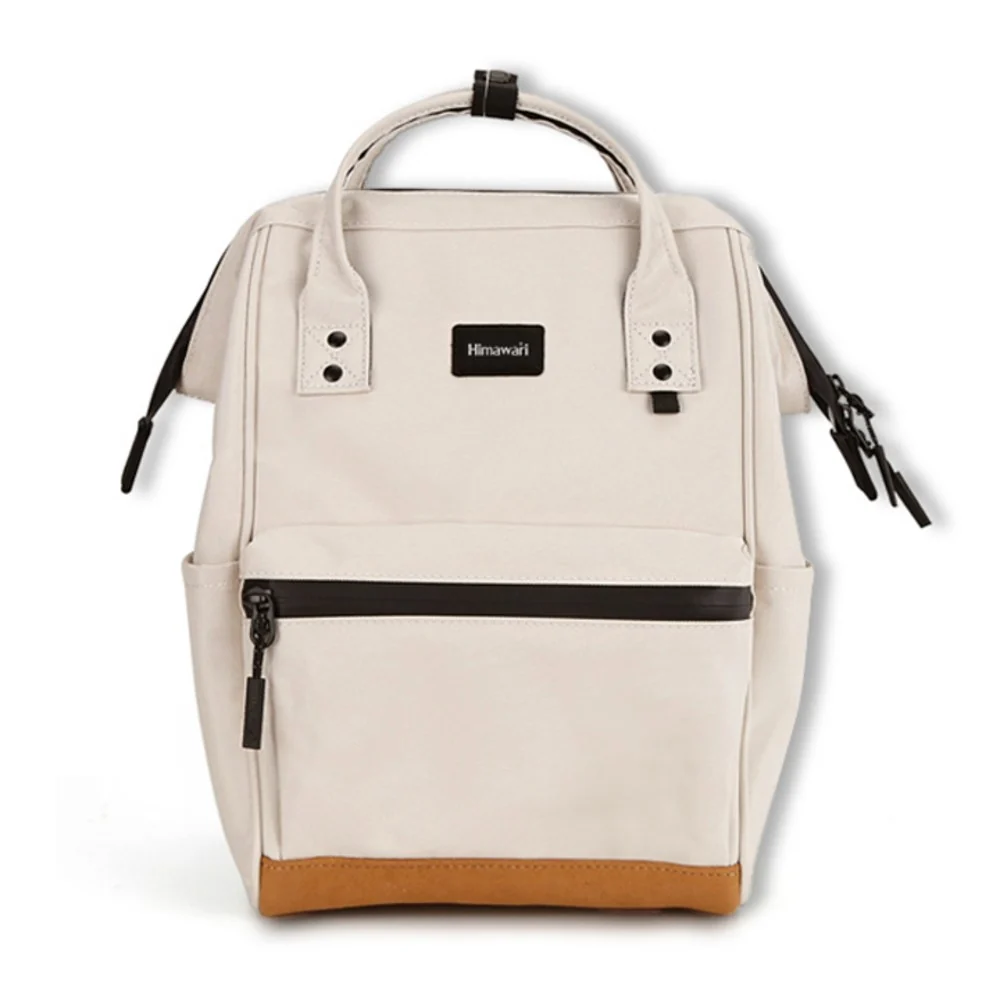

작은 백팩을 손에 든 채 여닫을 때

작은 백팩을 손에 들면 내려놓지 않고 바로 열 수 있을 것 같습니다. 실제로는 손잡이를 쥔 손과 지퍼를 움직이는 손이 각각 필요하고, 물건을 꺼낼 때 본체를 다시 받쳐야 할 수 있습니다. 가방이 작다는 인상에 더해 자신의 손이 어떻게 움직일지 봅니다. 자주 여닫을 계획이라면 세워 놓은 사진보다 열고 다시 닫는 과정이 중요한 비교 자료가 됩니다.
현재 가방에서 작은 물건 하나를 꺼내보면 동작의 차이를 알기 쉽습니다. 가방을 몸 앞으로 가져온 뒤 손잡이를 잡는지, 아래쪽을 손바닥으로 받치는지 봅니다. 서서 꺼낼 때와 앉아 받쳐둘 때도 손의 역할이 달라집니다. 모두 한 손으로 끝내려고 하기보다 자신이 안정적으로 할 수 있는 순서를 찾는 편이 실제 사용에 가깝습니다.
손잡이를 잡은 손은 본체를 받치고 있다
가방이 공중에 있으면 지퍼를 당기는 방향에 따라 본체도 따라 움직일 수 있습니다. 더 세게 당기기 전에 다른 손으로 어느 면을 잡아야 하는지 봅니다. 제품에서 운반용으로 안내한 손잡이와 아래쪽 본체를 각각 다루며 여밈을 조작할 자리가 있는지 확인합니다. 지퍼 손잡이를 본체를 매다는 곳으로 바꾸어 쥐지 않습니다.
물건을 꺼낼 때는 손이 한 번 더 필요해질 수 있습니다. 한 손이 가방을 들고 다른 손이 지퍼를 잡고 있었다면 여밈을 놓은 뒤 무엇을 잡을지 이어서 봅니다. 작은 파우치를 꺼낸 뒤 가방을 바로 닫을 수 있는지, 꺼낸 물건을 잠시 둘 자리가 필요한지 생각합니다. 지퍼가 움직였다는 사실과 필요한 소지품을 손에 남기는 것은 서로 다른 동작입니다.
Himawari No.124S 제품 정보의 아이보리 원본에서는 위쪽 손잡이와 검정 앞면 지퍼 선, 아래의 갈색 배색을 볼 수 있습니다. 가로 22 × 세로 33 × 폭 14cm로 안내된 외부 크기는 가방의 바깥 규모를 비교할 자료입니다. 손의 크기와 내용물에 따라 잡는 상태는 달라질 수 있으므로 한 손 조작이 가능하다는 기능으로 읽지는 않습니다. 평소 꺼낼 소품을 기준으로 실제 동작을 확인합니다.

받침 면이 생기면 다른 동작이 가능하다
가방을 놓을 수 있는 안정된 면이 있다면 본체를 내려놓은 뒤 여밈을 열 수 있습니다. 이때 손잡이를 계속 들 필요가 줄어들고 꺼낼 물건을 두 손으로 다룰 여유가 생길 수 있습니다. 놓을 면의 상태와 사용이 허용되는 위치를 먼저 봅니다. 작은 백팩이라는 이유로 의자 모서리에 일부만 걸치거나 음료 옆의 틈에 급히 두지 않습니다.
받침에 둔 뒤에도 가방이 어느 방향으로 움직이는지 봅니다. 지퍼를 한쪽으로 당길 때 본체가 따라오면 다른 손으로 가볍게 받칠 수 있습니다. 가방을 혼자 세워두는 모양을 만들기 위해 안에 무거운 물건을 더할 필요는 없습니다. 현재 짐으로 여밈이 보이고 손이 들어갈 방향을 정하면 됩니다. 작은 가방의 바닥과 손의 위치가 함께 쓰이는 장면입니다.
앉은 자리에서 가방을 무릎에 받칠 수 있다면 꺼낼 때 생기는 높이도 봅니다. 가방 윗부분에서 물건을 잡을 손이 들어가는지, 다른 짐을 함께 빼야 하는지 확인합니다. 장소에서 무릎에 둘 수 없는 경우에는 안내된 다른 위치를 사용합니다. 어느 자리에 두든 지퍼를 열고 물건을 잡을 범위까지 남아 있어야 합니다.
작은 포켓을 자주 쓰는 날
이동 중 여러 번 찾는 카드와 목적지에서 쓸 파우치를 같은 칸에 두면 가방을 더 오래 열 수 있습니다. 실제 구조 안에서 자주 꺼낼 것을 찾기 쉬운 자리에 두는 방법을 검토합니다. 물건이 작은 만큼 깊은 곳으로 내려가 잡기 어려운지도 봅니다. 작은 포켓이 있다면 그 이름만 읽지 말고 손을 넣어 잡을 외형과 여는 방향을 대조합니다.
물건을 빨리 꺼내려고 가방을 열린 채로 들고 다닐 이유는 없습니다. 필요한 순간에 잠시 멈추어 꺼낸 뒤 같은 위치에 돌려놓을 수 있는 구성이 좋습니다. 그 동작이 계속 번거롭다면 가져갈 묶음이나 가방을 열 장소를 바꾸어 볼 수 있습니다. 자주 쓰는 물건 한 개로 직접 꺼내고 되담아보면 불편한 단계가 어느 부분인지 구체적으로 남습니다.
손에 종이 봉투나 우산이 더해지는 날도 생각해볼 만합니다. 가방 하나를 들 때 편했던 방식이 두 물건을 함께 다룰 때는 달라질 수 있습니다. 다른 짐을 먼저 안정된 자리에 정리한 뒤 가방을 여는 순서가 가능한지 봅니다. 가방을 더 작게 바꾸는 것만으로 손의 역할이 모두 해결되지는 않으므로 실제로 들고 갈 물건을 함께 준비합니다.
닫을 때는 잡은 위치를 다시 보기
물건을 넣은 뒤에는 지퍼의 끝까지 자연스럽게 움직일 자리가 있는지 봅니다. 봉투나 주머니 모서리를 눌러 닫아야 한다면 가방을 내려놓고 안쪽부터 정리할 수 있습니다. 가방을 자연스러운 형태로 놓은 뒤 입구에 걸린 부분을 정리합니다. 닫힘을 마친 뒤 손잡이를 잡으면 소품이 밖으로 남았는지도 알아보기 쉽습니다.
새 가방을 살필 때에는 허용된 범위에서 닫힌 상태부터 같은 순서를 이어봅니다. 들어 올려 필요한 포켓을 찾고, 안정된 면에 놓아 물건을 꺼낸 뒤 다시 닫습니다. 손에 든 상태가 편한 경우와 내려놓아야 편한 경우를 구분해 기록할 수 있습니다. 어느 쪽이든 자신이 자주 쓰는 장소에서 가능한 동작인지가 선택의 기준입니다.
사용하던 백팩의 지퍼 움직임이 갑자기 달라지면 조작 속도보다 현재 상태를 봅니다. 원단이나 소품이 걸렸는지 살펴보고 문제가 남으면 제품 안내에 따라 문의합니다. 작은 가방이라 쉽게 열릴 것이라는 기대와 지금의 실제 움직임을 나누어 읽으면 됩니다. 다음 외출에서는 가방을 둘 면과 먼저 꺼낼 물건을 정한 뒤 그 동작부터 이어가보세요.